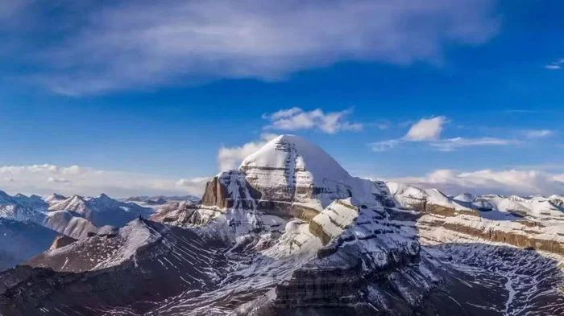
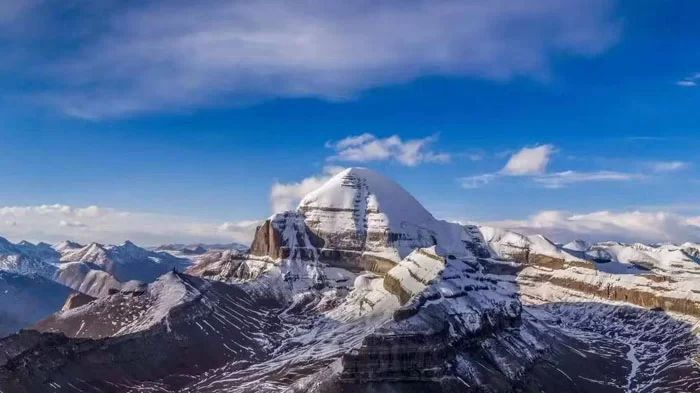
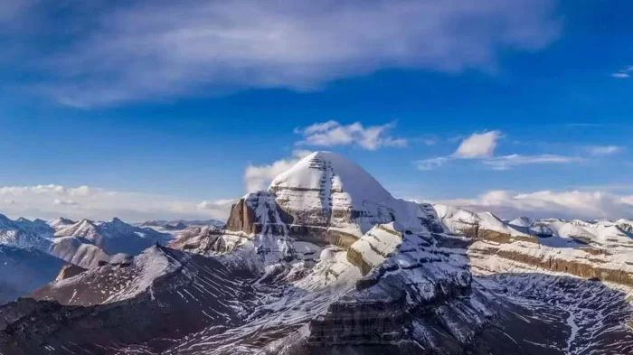
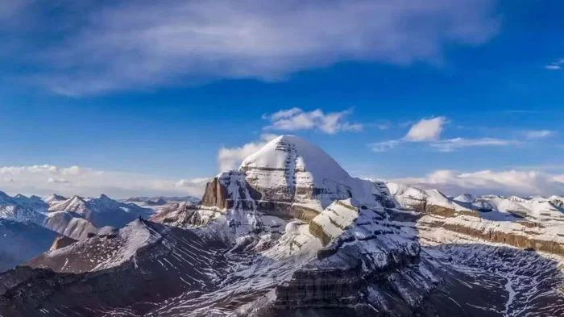

A spiritually enriching 11-day pilgrimage to the sacred Mount Kailash and Lake Mansarovar, utilizing a scenic route through Nepal and Tibet.
The Kailash Mansarovar Yatra is an 11-day journey starting from Lucknow. This route combines road travel to Nepalgunj, domestic flights to Simikot, and a thrilling helicopter ride to Hilsa at the Tibet border.
Experience the divine atmosphere of Lake Mansarovar and undertake the challenging 3-day Parikrama (circumambulation) of Mount Kailash, reaching a peak altitude of 5,645 meters at Dolma La Pass.
This is a high-altitude trek requiring good physical fitness. The Dolma La Pass is particularly challenging, requiring stamina for a 22 km trek over 9-10 hours.
Proper adaptation is vital. The itinerary includes dedicated rest and acclimatization days in Simikot (2,910 m) and Taklakot (3,775 m) to prepare for higher altitudes.
We provide oxygen cylinders for emergencies, high-altitude medicine, and a basic first-aid kit. A personal health checkup certificate is mandatory for booking.
Upon arrival in Lucknow, meet our representative and transfer to Nepalgunj by road. The 180 km drive takes approximately 4-5 hours. Check in at the hotel and relax or explore the local market in preparation for the journey.
Take an early morning scenic 55-minute flight to Simikot (2,910 meters). Spend the day resting and acclimatizing to the altitude while enjoying views of the Himalayan landscape.
Enjoy a thrilling 20-minute helicopter ride from Simikot to Hilsa, near the Nepal-Tibet border. After immigration formalities, drive 30 km to Taklakot (Purang) at 3,775 meters. Take a short evening acclimatization walk.
A dedicated day for rest to ensure a smooth journey ahead. Engage in light activities or short hikes to help your body adapt to the 3,775-meter altitude.
Drive 90 km (3-4 hours) to reach the sacred Lake Mansarovar at 4,590 meters. Take a holy dip, perform rituals, and soak in the divine, serene atmosphere.
Witness the sunrise over the lake and participate in morning prayers. After breakfast, drive 40 km to Darchen (4,575 m), the base for Mount Kailash, and prepare for the Parikrama.
Begin the first day of the Parikrama, trekking 18 km over 6-7 hours. The trail offers stunning views of Mount Kailash’s North Face before arriving at Dirapuk (5,080 meters).
The most challenging day, crossing Dolma La Pass at 5,645 meters. Trek 22 km (9-10 hours), witnessing the sacred Gauri Kund during the steep but rewarding descent.
Complete the final 8 km trek (3-4 hours) to the endpoint, . Drive 110 km back to Taklakot (approx. 3 hours) and relax after the challenging trek.
Drive back to Hilsa, cross the border, and take a helicopter to Simikot. Connect to a 55-minute flight to Nepalgunj and rest at the hotel.
Drive 180 km (4-5 hours) back to Lucknow. Transfer to the airport or railway station, marking the end of your spiritual journey.